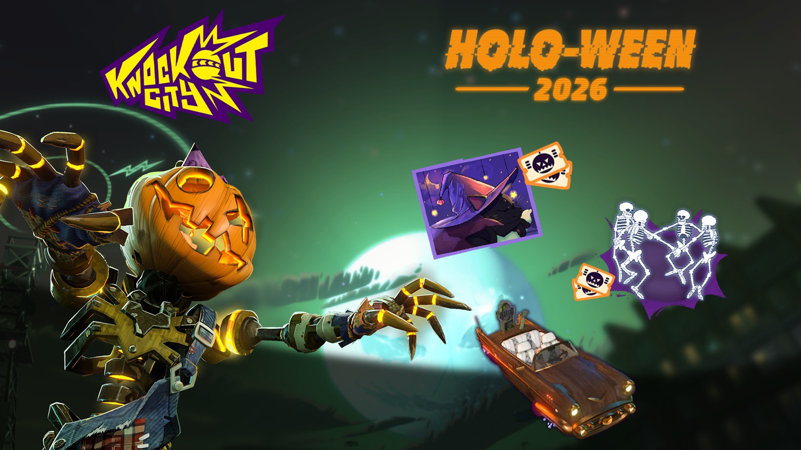
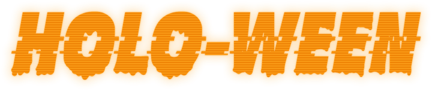

Join the Discord
Find minute-by-minute player status, stay in-the-know about upcoming events, access community support, or just chat with fellow brawlers! That's TCNS, baby!
Sunset falls on Knockout City, but The City Never Sleeps!
Join thousands of members in experiencing the largest private server for KOCity!
Live status
Live Status for all players is tracked 24/7. This chart shows the average player count for each hour last week, helping you find the best time to brawl. A live player list is updated minute-by-minute in our Discord server, displaying detailed player counts, locations, and active playlists to help you find exactly where to queue.
Find details in the Discord
For Holo-Ween, we didn't just flip on an old playlist. We shipped a full-on content update to every player on the server; it was the first new Knockout City update since the official game went offline.
In-game events
TCNS runs events inside the game itself, with content delivered to your client through the launcher.

The first content update to Knockout City since the shutdown, fully powered by the players.
View the patch notesThe next event is in the works! Announcements, patch notes, and schedules will be posted as soon as they're ready.
Pirate Radio Patch NotesCommunity
Find minute-by-minute player status, stay in-the-know about upcoming events, access community support, or just chat with fellow brawlers! That's TCNS, baby!
TCNS will always be free to play, but is thankful for your support! All funds go toward maintaining server status, and members receive various exclusive in-game perks!
You need the Pirate Radio Launcher to connect. Install it, sign in with kocity.cc, and pick The City Never Sleeps from the server list.